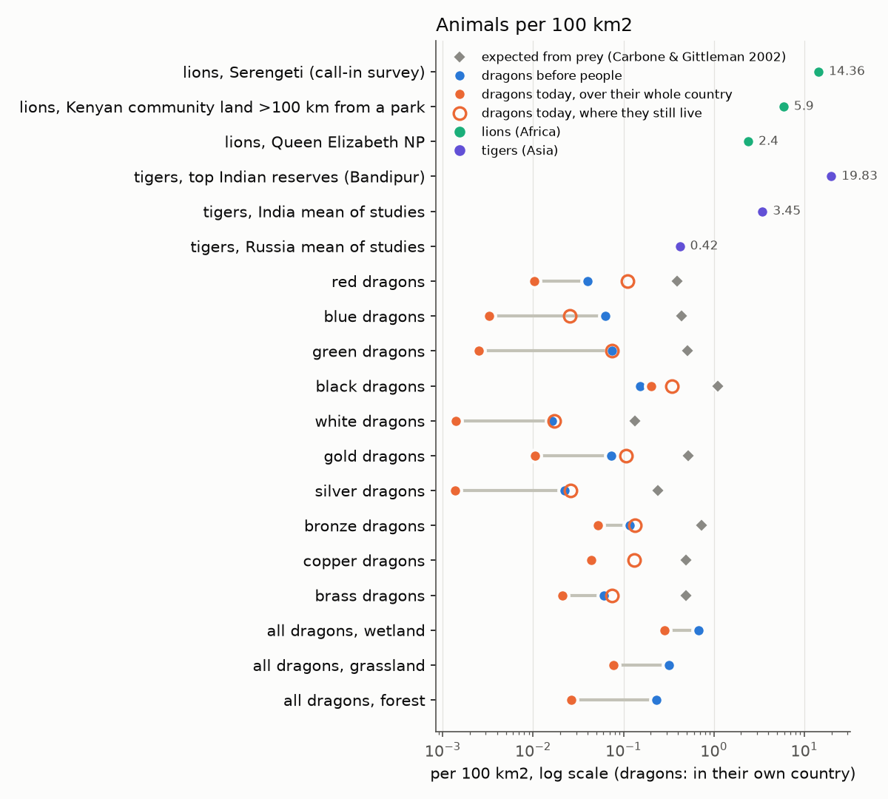

Good morning, Daniel. The cultures proposal you asked for is ready, just below: read it whenever, and we
iterate. Overnight, dragons round 2, in-fighting for every people, the D31 check and the L8 refine all merged. One new physics
call: the wild herds (D34). v0.1.0 is tagged: no hard failures in 42 test worlds, and fresh showcases to look at.
Your 1 Gyr L8 world
Ready to open:world 0af5ae. It is seed 11 at 655,000 cells of about 28 km, finished at the latest
interglacial (sea level −79 m). Also: the plain last moment 928016, run 6a6fd6
and its 300 kyr ice-age pass 7d803e. It stayed on its 8 cores and nothing crashed.
What a billion years fixed: the 100 Myr L8 world's oddities were its youth. Peaks reach 6,000 m (were 3,250). The biggest
river carries 18,300 m³/s to the sea along 239 cells (it was 6,300, ending in an inland pocket). Land draining inland fell from 28% to
about 5%. One continent, Hizam, holds 87% of the land; that's this seed.
What it didn't fix: the continental shelf. It covers 0.6–1.2% of the ocean, against Earth's 6–7% (and 4.2% on the young
world). So the missing shelf and the cliff at the continent edge are the model's, not the run's age, which is exactly what lane
100c is working on. Mid-sized islands are still short: 14, against about 44 for Earth on this grid.
Cost: 5 h 26 min to simulate (about 5.7 h per Gyr on 8 cores), then 10 min to slice, 1 h 48 min for the ice-age pass and
9 min to finish: 7.5 hours in all. Peak memory 30 GB, at the final write. No peoples run on it yet; say if you want one.
Notes: docs/review/l8-world/gyr-notes.md. The 100 Myr world a16f5a and its refined L7 → L8 cousin
fb5e11 are still there.
v0.1.0 is tagged
The v1 milestone is done (local tag, not pushed). No hard failures in 42 test worlds, and every v1 ticket is closed.
The six showcase planets are rebuilt on the final code, at L7. The older showcases and your feedback runs are still there until you've
looked at these.
Only 3.5 °C warmer: the recipe is weak now that the star no longer brightens late. Hothouses come after the tag.
The peoples runs show overlapping demes and the Cultures tab, about 300 living cultures each. Details:
docs/review/v010-showcases/notes.md and docs/review/v1-cut/final-tally.md.
Why humans hold two thirds, and why there are no elf continents
Lane 84, measured by switching one thing off at a time (D&D preset, seeds 7, 10, 13; humans at 67%). Report:
docs/review/peoples-why/report.md.
Cause
Points of human share
Plain words
Density
32
Humans live at about 10 per km² (farmers 12) from 200,000 years ago, before anyone farms. Everyone else averages 1.4. Humans hold only 21% of the peopled land.
The contest's edges
19
Five rules that favour the denser, expanding people. Each covers for the others, so none alone is worth more than 4.
The human offshoots (your hunch)
16
Farmers, herders, seafarers and so on each make a full claim on the same land, so a human cell is filled about 1.3 times over. They should share one capacity and differ at the deme level.
Boats
8.5
Only humans leave their cradle continent by sea, and they win where they land.
Density follows the land
6
Continents are already blocky (2–3 peoples make 90% of a typical one). The trouble is who holds them: humans lead 6–9 of 10.
Cut the humans down and your picture appears by itself: kobold, kenku, dragonborn, halfling, hobgoblin and orc continents.
"Fit decides the contest" needs a cost for being a generalist. Human habitat scores 0.82–1.00 in nearly every other
people's best country (dwarves and goliaths are the exception), so "who fits better" barely ever says "not the humans". Lane 83 is
building it with a jack-of-all-trades cost or fit by preference.
The 40× "brittle" swings are mostly the difference between two test worlds. On one world they move under 3×, except
halflings, which flip all or nothing on whether they get their founding land before human boats arrive.
Dragons in farmland keep 9% of their numbers. About 42% of the loss is food (hunting and overkill of the wild herds,
with livestock giving about half back) and 58% persecution, rising to 93% where farmers are dense.
War between peoples doesn't exist yet. Peoples only compete for room. See D26.
All of this has gone to lane 83 (your D20), which now takes on one capacity per people, density by era and way of life,
sister peoples born on different continents, and a home-ground edge.
Proper cultures: the proposal
READ WHEN YOU LIKE · 19 QUESTIONS, EACH WITH A LEAN
Open the full proposal (long; the decisions are in §5).
It builds in three stages, and each one works without the next.
Languages with no words yet. Every culture gets a speech variety. Each has a family tree, a "how similar" score against
its neighbours and a mutual-intelligibility number, plus a light history: splits, contact, a shift to a neighbour's tongue, a
language dying out. The similarity score drifts at a measured rate (Holman et al. 2011) and stays higher where neighbours trade
and marry. Two varieties count as separate languages at about 1,300 years apart (Wichmann's line). The names are only glosses
from your ethnonym taxonomy, so words can come later.
Polities and war. States form where farmers are boxed in (Carneiro's circumscription, which the code already
measures), reach only as far as their messages travel, and break up at measured rates. Real war replaces today's stand-ins, and
your human in-fighting becomes states splitting. My expectation: this trims the leading people's share; it won't topple it.
Attitudes, gods (a placeholder), writing and a "Cultures here" block in the brief.
Main leans: one speech variety per culture; computed from the record after the run, not inside it, at first; the
languages lane and the polities lane run side by side once the overlapping-demes lane has merged; then you look before the names
lane starts.
What a continental shelf is, and where our eroded rock goes
What it is. The drowned edge of a continent: continental crust under shallow sea, sloping gently out to a "shelf break",
on average around 120–140 m deep and around 80 km wide (anything from none to the Siberian shelf's 1,500 km). Past the break the
continental slope drops steeply to the deep ocean floor, and at its foot lies the continental rise, a thick apron of sediment
from the continent. Wide shelves go with quiet "passive" margins like North America's east coast. Margins on a plate boundary,
like the Andes, have almost none.
Where it comes from. Three things together:
Crust. When a continent rifts apart, its edge is stretched thin. Thin crust floats lower, and as the stretched edge
cools over tens of millions of years it sinks further. That makes a ramp of continental crust going under the sea. Round 1's
"necking" was this.
Sediment. Rivers dump eroded rock at the coast. It piles up as a wedge on that sinking ramp and builds outwards, and
its front is the shelf break and the slope (Round 3's creep acts here).
Sea level. Ice ages drop the sea about 120 m and expose the shelf, and waves plane it flat as the sea goes in and out.
That's why the break sits at a fairly uniform depth. Today's shelves are drowned because we're in an interglacial.
Your question: where does our eroded rock go? I checked the code (planet/surface.py, planet/tectonics/crust.py).
The model does track it, all of it, in this order:
Lakes and closed basins keep what fits (inland basins fill up).
Floodplains in low ground keep some.
At the sea, the shelf cells keep it up to 60 m below sea level ("wave base"), nearest the coast first.
The first deep cell past the shelf (the "brink") keeps everything until it's full to that level. That's the one-cell wall from
round 2's diagnosis.
Only once the brink is full does anything go farther, spreading out as deep-sea fans.
Sediment that lies on ocean crust rides the plate to a trench. Part is scraped off into the coast's mountains (accretionary
wedges, like Japan), and the rest goes down with the slab. That part is gone for good.
Where I think your suspicion points. Two weak spots:
Rock is only conserved until it reaches ocean crust. The sediment past the brink, and the rise, sit on ocean floor that keeps
going down trenches. So a model that builds shelves only from sediment loses its shelf material to subduction. Real shelves sit on
continental crust, which doesn't sink.
Nobody has added up where all of it ends, as a budget per destination over a run. That's the obvious first look. I've asked
round 4 to add that tally to its shelf-collapse look (shelves are 5% of the ocean at 100 Myr and 1.3% by 150–250 Myr), so we can
see if it's sediment leaving or the crust beneath changing. Round 3's creep pushes more sediment off the shelf toward the deep
sea, and that might also be where its land loss comes from.
D28 · DRAGONS ROUND 2 · merged; one real question left (D34)
Your mortality hunch: not the cause. Every age is counted (24% wyrmlings, 55% young, 19% adults, 3% ancients), and a harsher death schedule actually gives more dragons (the average dragon is smaller and eats less).
Why they're rarer than lions: mostly size, and that part is sound. On the same prey, a 1.65 t dragon should be about 1/13 as dense as a 142 kg lion (Carbone & Gittleman 2002); the model's chain comes out at 0.86 of that law. Ten kinds also share one top-predator slice of the food, so compare a lion with all dragons together: before people, 0.68 per 100 km² in wetland, 0.32 in grassland, 0.23 in forest. The body-size target ("north star") is about 3 per 100 km² on rich prey, so the model is a fifth to a tenth of it. About half that gap is the thin herds (D34).
Built and merged: your B. The 10-farmers anchor is gone; dragons are now cleared from land where people are as dense as where lions vanish (about 25 per km², Riggio et al. 2013), and stay in the wilds (94% kept there). Riding farmers at 10 per km² keep about half their dragons instead of a tenth. A world total of about 96,000 (was 84,000), with about 2,000 in a Sword Coast-sized region. Your lever: "dragon abundance" ×¼ to ×4 in the peoples controls, labelled as a world-builder's choice.

Grey diamonds: what the body-size law expects from each kind's prey. Open circles: density where each kind still lives today. Bottom rows: all dragons together by biome.
D36 · NOW THAT EVERY DRAGON IS SEEN, EACH KIND IS 1–5 CULTURES
The old record caught a dragon kind only where it led a cell, which was 4% of the blue dragons' land and 10–13% for gold,
silver, copper, bronze and red. That blindness is what made "one culture per kind" come out on its own. With every dragon now
counted, a kind splits wherever its populations sit farther apart than a dragon flies (1,500 km). On the test world that gives
black 1, blue 2, bronze and gold 2–3, red, silver and brass 4, green and white 5 living cultures.
A fold each kind back into one culture, as you said ("culture simply along color lines"). My lean for now.
The languages lane in the proposal can revisit it: if Draconic is one tongue, something has to hold it together.
B keep the splits: a red dragon a continent away is its own culture.
C keep the mechanism, but stretch a cohesive kind's time apart by its cohesion, so dragons split only after very long
isolation. This sits between A and B.
D34 · THE WILD HERDS ARE 2–3× THIN
At the same rainfall, the model's warm-country grazing herds are 2–3× below real African parks (Coe, Cumming & Phillipson 1976). The cause is upstream: the model's plants put about 2.4× less growth above ground than the figure Coe used. Fixing it would mean 2–3× more dragons, giants and wild game in warm grassland, without a fudge. It touches the vegetation model (your earlier PW-1073 ruling), so it's your call.
A accept; the dragon-abundance dial is the lever.
B check the vegetation's savanna growth against a sourced table first, then fix whichever step is wrong. My lean: it's a physics question, and the climate and plant model is where v1's credibility lives.
C fit the herds directly to Coe's measured numbers, skipping plant growth. Quick, but Africa-only.
D35 · SMALL ONES, ANSWER IF YOU LIKE
Cultures round 2 numbers (PW-1254): time apart 600 → 150 years from stone age to renaissance; cohesion dragons 0.9, giants 0.5; side-by-side merging after 1,000 years. My lean: keep them. Re-cut your runs' demes so the viewer shows round 2 (PW-1253)? My lean: yes, after the overlapping-demes lane lands.
Learned country for followers: a dragon living over human farmland can't count the humans' farming as its own new
country, so peoples that mostly follow (most dragon kinds, hill giants) never split off "adapted" groups. Storing it for them
costs +20% on the presence table and a new peoples run. My lean: leave it until cultures and languages need it.
Refine: one ~1–2 h refactor so the regional zoom and the L8 refine share one terrain-detail function instead of copying 40 lines. My lean: yes. Landform shapes on refined worlds: leave out at L8 for now (lean).
Running now
Lane
What
100 · continent edge
Round 3: the edge looks right, but the world came out cooler, so it's not merged
yet. Sea-floor mud now creeps downhill, faster in shallow water (the standard model; its speed comes from Jordan & Flemings
1991's published range, read through a tutorial). Across all 36 test worlds, coasts with deep sea in the very next cell fell from 23% to 6.5% (Earth
3.5%), and middle depths went from 13% to 20% of the ocean (Earth 19.6%). But the tested mix of three changes was also about 2 °C
cooler, had 3 points less land and passed 26 worlds against 29. That's within noise, but it isn't "not worse". So it stays
switched off while round 4 tests the creep on its own and works out where the land goes. A side finding: on every arm the shelves
collapse early (5% of the ocean at 100 Myr, 1.3% by 150–250 Myr) and then slowly recover, so something strips the first continents'
shelves. Round 4 looks at that too.
105 · L8, 1 Gyr
Your ask: the same seed-11 L8 planet, but 1 billion years, held to 8 cores. Rough guess: 5–8 hours for the run plus the slice, by lane 86b's per-Myr speed. Notes as it goes in docs/review/l8-world/gyr-notes.md.
After the tag
Showcases rebuilt on final code, then the space-to-ground globe's first try (PW-1198).
Demes on the map, lighter (lane 111; all tests pass, 915): the "whose demes" picker now downloads only the moment
you're looking at, about 0.2 MB instead of 124 MB up front, and a people's brief covers everywhere it lives (red dragons 20,000
years ago: 0.9 → 9.2 Mkm²).
Overlapping demes merged (your ask; all tests pass, 912): every people's presence is now stored for every
moment, so a kobold deme can sit beside a hobgoblin one in the same hills, and a dragon kind's demes lie over the peoples below.
87% of peopled cells now hold demes of two or more peoples. The globe's demes layer has a "whose demes" picker, and hovering a
cell lists every deme on it. Your existing runs need a fresh peoples run to show the overlap. One question came out of it (D36).
Merged overnight (all tests pass, 909):
peoples in-fighting for everyone with a floor that holds (it grew the leader a little, as the humans are walled in least; parked until war and polities);
dragons round 2 (D28 above);
cultures round 2 (reach in the demes, as you said; time apart by era; giants keep cultures; each dragon kind one culture through cohesion, no special case, but see D36);
the L7 → L8 refine: world fb5e11, 20–25 minutes instead of 146 for a direct L8, same detail; L9 works but is too big for the viewer yet.
Cultures first cut merged (D33 answered): the Cultures tab is live on your existing runs; giants keep cultures; 1,000 years apart was far too long; dragons stay one culture per colour, by reach rather than by a hard-code (lane 108).
Tags are 0.x: the first tag is v0.1.0 (the v1 milestone), then v0.2.0 for v2, and so on.
Your D28 question, answered: "a dying people’s land is left empty" is the evolution track. When a stem (e.g. archaic humans) ends at its last split, its land goes to no child; the children spread into it. It is not one group replacing another on a continent. Your mortality hunch is with lane 103.
Your 10-31 evening answers: D32 B (the crash line is where plants can no longer live, so the 85 ppm world passes); D31 A, humans in-fight too, and peoples-share work pauses until war and polities; D28 more dragons with a lever (lane 103); L8 refine overnight (lane 104).
Dragons D28 B merged (lane 99, 886 tests pass): sea food for white, bronze and blue; the census and the lions-and-tigers comparison are in the D28 card.
CO2 plant fix merged (lane 95, 884 tests pass): L6 crashes 2 → 1 of 36, the crash world 36 → 85 ppm, soft pass 28 → 29 of 36. It adds no dryness (the drier scorecard came with the inland pits). Report: docs/review/v1-cut/plant-floor.md.
Peoples D27, D25, D26 merged (lane 97, 882 tests pass): founding at 3 sites on one landmass, the four raider brakes with viewer dials raiders and war, dwarves resist disease at 0.75 (this takes effect once the plague code reads it), and enemy pairs log "hunt" events on their shared border (about 600 over a full history; numbers unchanged).
Inland pits fixed (lane 98, merged, 877 tests pass): ground below 0 m counts as sea only if it reaches the ocean. Otherwise it fills to a lake or stays a dry basin. Side effects: Earth's Atlantic was missing the Amazon's water, so an old "overturning passes" result was false (a v2 ticket now). One L6 scorecard draw came out drier, which is probably chance and gets re-checked in the final tally.
D30: inland pits go into v1 if the fix is quick; the continental slope stays v2, since it already failed a round. When physics lanes are idle, I pick the most useful physics work regardless of version.
Your 10-31 answers: D25 (1 B; 2 A+B+C plus in-fighting; dwarves 0.75; portals later; item 5 awaits graphs), D26 B then A, D29 C, D27 to my judgement plus your spread-founding idea. All in lanes 95 and 97.
Merged: your D20 peoples fixes (lane 83) and the dragon food chain (lane 90), 868 tests pass.
D20–D24 answered and in lanes: D20 and D23 (hunters' density, overkill by co-evolution) in lanes 83 and 90; D21 fixed
portals for now; D22 virgin soil off, events designed (D25); D24 keeps 0.5%.
The v1 milestone means the planet; PW-508 to v2; the 25% glacial-maximum line closes at the tag; the tally runs.
New epics: space-to-ground globe (PW-1198, first try right after the tag, half the CPUs and the GPU, hard-capped with
taskset); export targets Minecraft / Dwarf Fortress / Valheim (PW-1200, v3); a walkable setting (PW-1199) in the new
v4 milestone.
Your PHB and DMG are in docs/references/dnd/ (git-ignored, never committed), searchable by page with
tools/rulebook.py.
Viewer at L8 merged: globe mesh built once into typed arrays, layer switches recolour only, the flat map built on first use (layer switch on the L8 flat map 2.7–5.3 s → ~0.1 s).
The finest-timescale drought gap is a v2 physics ticket (PW-1171).